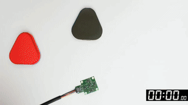

|
Founding Research
Engineer |
{kind=link}

|
|
|
Hi I am Enes! I am currently a Founding
Research Engineer at a
Stealth Robotics Startup. I am interested in robot learning and
how to engineer the best systems for enabling robots to learn better.
I also like to work on high performance software.
Previously I was a Graduate Research
Assistant at CILVR Lab, NYU, where I
worked on mobile manipulation and
tactile sensing, advised by Prof.
Lerrel Pinto.
|

|
|
| Master of Science, Computer Science | Sept 2023 - May 2025 |
| New York University, Courant | New York, USA | |
| B.S. in Computer Science | Sept 2018-Jun 2023 |
| Koc University | Turkey |

|
|
|
Graduate Research Assistant
CILVR, New York University | New York, USA |
Jan 2022 - Sept 2023 |
| Worked on problems in Robot Learning, Specifically in Mobile Manipulation, Imitation Learning and Tactile Sensing. Advised by Prof. Lerrel Pinto | |
|
Research Scholar
EPFL VITA Lab | Lausanne, Switzerland |
Jul 2022 - Oct 2022 |
| Research on "World modeling and hierarchical planning for autonomous driving" | |
|
Machine Learning Engineer
Wayve | London, UK |
Jul 2022 - Oct 2022 |
| I structured the Simulation-as-a-service for the in-house simulator to be scalable up to thousands of GPUs. I also implemented novel view synthesis simulator for closed-loop offline evaluation. | |

|
|

|
Manan H Anjaria, Enes Erciyes, Vedant Ghatnekar, Neha Navarkar, Haritheja Etukuru, Xiaole Jiang, Kanad Patel, Dhawal Kabra, Nicholas Wojno, Radhika Ajay Prayage, Soumith Chintala, Lerrel Pinto, Nur Muhammad Mahi Shafiullah, Zichen Jeff Cui project page | code | arXiv Recent advances in robot learning have generated significant interest in capable platforms that may eventually approach human-level competence. This interest, combined with the commoditization of actuators, has propelled growth in low-cost robotic platforms. However, the optimal form factor for mobile manipulation, especially on a budget, remains an open question. We introduce YOR, an open-source, low-cost mobile manipulator that integrates an omnidirectional base, a telescopic vertical lift, and two arms with grippers to achieve whole-body mobility and manipulation. Our design emphasizes modularity, ease of assembly using off-the-shelf components, and affordability, with a bill-of-materials cost under 10,000 USD. We demonstrate YOR's capability by completing tasks that require coordinated whole-body control, bimanual manipulation, and autonomous navigation. Overall, YOR offers competitive functionality for mobile manipulation research at a fraction of the cost of existing platforms. |
|  |
Raunaq Bhirangi, Venkatesh Pattabiraman, Enes Erciyes, Yifeng Cao, Tess Hellebrekers, Lerrel Pinto ICRA 2025, Best Paper: RSS 2025 Workshop on Hardware Intelligence project page | code | arXiv In this work, we address the critical challenges that impede the use of tactile sensing -- versatility, replaceability, and data reusability. We made a tactile sensor, AnySkin, that simplifies integration making it as straightforward as putting on a phone case and connecting a charger. |